Թեստ 36
30:00
1. «Ճանապարհային երթևեկության անվտանգության ապահովման մասին» ՀՀ օրենքի համաձայն` ավտոբուս է համարվում`
2. Զիջել ճանապարհն այլ տրանսպորտային միջոցների նշանակում է
3. Տրանսպորտային միջոցների շահագործումն արգելվում է, եթե`
4. Տրանսպորտային միջոցների շահագործումն արգելվում է, եթե՝
5. Նշեք խաչմերուկի անցման հերթականությունը`
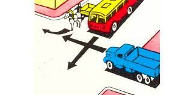
6. Հետևյալ նշաններից (ցուցանակներից) ո՞րն է ցույց տալիս տրանսպորտային միջոցի կանգնեցման ձևը կայանման տեղերում:
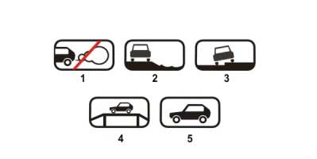
7. Խաչմերուկը երկրորդը կանցնի`
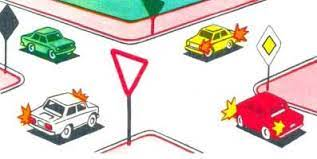
8. Ո՞ր տրանսպորտային միջոցները կարող են կատարել աջ շրջադարձ:
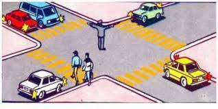
9. Կայանատեղիից միաժամանակ շարժումը սկսելու դեպքում պարտավոր եք արդյո՞ք զիջել ճանապարհը առջևում գտնվող վարորդին։
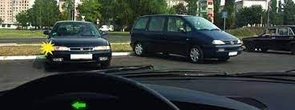
10. Ի՞նչի համար են ծառայում երթևեկելի մասի վրայի սլաքները:
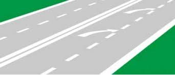
11. Քարշակման ժամանակ, վթարային լուսային ազդանշանի բացակայության կամ անսարքության դեպքում «Վթարային կանգառ» նշանը տեղադրվում է`
12. Վարորդի կողմից ձեռքով տրվող նախազգուշացնող ազդանշանը դադարեցվում է`
13. Միջքաղաքային ավտոբուսի վարորդն իրավունք ունի՞ վազանցելու մոտոցիկլին, որը երթևեկում է 70 կմ/ժ արագությամբ:
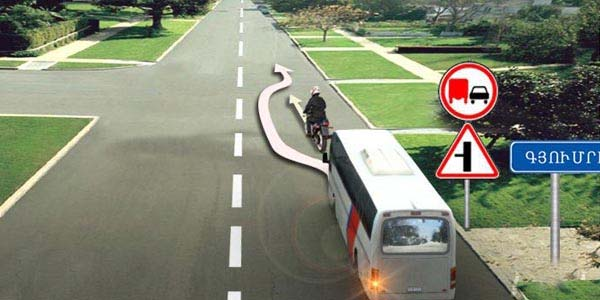
14. Թո՞ւյլատրվում է մոտենալ աշխատանքի վայրին այս նշանների ազդման գոտում
15. Խաչմերուկն ուղիղ անցնելիս պարտավոր եք զիջել ճանապարհը
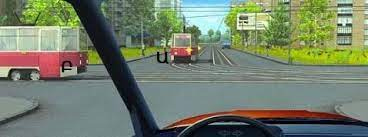
16. Պարտավոր ենք արդյո՞ք այս իրավիճակում զիջել բեռնատարի վարորդին
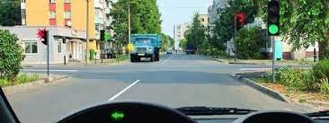
17. Թույլատրվո՞ւմ է կանգառը ավտոմոբիլի տեղակայման նման ձևով
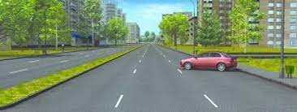
18. Ի՞նչ է ցույց տալիս ճանապարհային նշանը
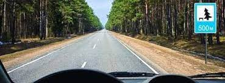
19. Երթևեկությունն ուղիղ շարունակելու դեպքում